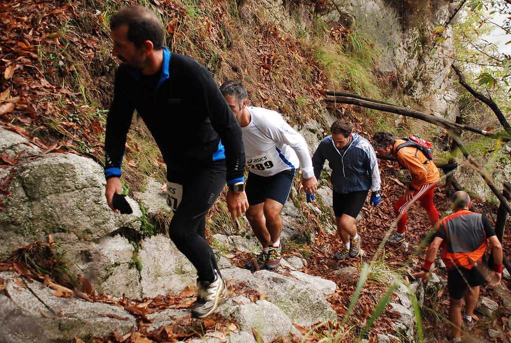

運動醫學
越野跑不受傷的三個準備：
腳踝、膝蓋、和你的誠實
山徑不會配合你的訓練進度。它只會誠實地回報你平常有沒有準備。

2024 年我跑了 XTERRA 的 13K，2025 年去了 Xtrail 100。 我不是什麼強者，但這幾年下來，我對「病人在講什麼」的理解， 比只看文獻的時候清楚太多了。
這篇不談配速也不談裝備，只談三件會讓你受傷、也最容易被忽略的事。
一、腳踝：越野跑最常見的傷
路跑的地面是可預測的，越野不是。落葉、鬆石、樹根、濕滑的泥地， 每一步的支撐面都在變。所以踝關節外側韌帶扭傷 在越野跑受傷統計裡長年名列前茅。
問題不在「扭到那一次」
真正的麻煩是反覆扭傷。第一次扭傷之後，韌帶的本體感覺受器受損， 你的腳踝對「自己現在歪了幾度」的感知會變差。感知變差 → 反應慢 → 更容易再扭 → 感知更差。這就是所謂的慢性踝關節不穩定。
單腳站立。從睜眼開始，站得穩之後閉眼， 再進階到站在軟墊或枕頭上。每邊 30 秒、每天三組。 這個動作看起來蠢，但它練的正是本體感覺—— 越野跑最需要、也最少人練的能力。
另外把小腿肌群（腓腸肌、比目魚肌）和腓骨肌練起來。 提踵、離心下放，簡單但有效。
二、膝蓋：問題出在下坡
很多人以為上坡最傷膝蓋，其實相反。下坡才是。
上坡時股四頭肌是向心收縮（肌肉縮短、出力）； 下坡時它必須離心收縮——一邊被拉長、一邊煞車， 承接你整個體重加上衝擊。離心收縮產生的肌肉微損傷遠大於向心收縮， 這也是為什麼下坡跑完隔天大腿特別痠。
長時間下坡之後，股四頭肌疲乏，膝關節的穩定與髕骨軌跡就開始跑掉， 於是出現髕股疼痛症候群（膝蓋前面、膝蓋骨周圍的痛） 和髂脛束症候群（膝蓋外側的痛）。
離心訓練，而且賽前要真的練下坡。
緩慢下放的深蹲、下階訓練、保加利亞分腿蹲。另外
臀中肌一定要練——它負責在單腳站立期穩住骨盆，
這條肌肉無力，膝蓋就會往內塌，髂脛束跟著遭殃。
側躺抬腿、蚌式、側走彈力帶，都是很划算的投資。
賽前只練平路，等於沒練
這是我看過最多人犯的錯。平路跑量堆得很漂亮，比賽當天遇到連續下坡， 股四頭肌在第 8 公里就報銷了。離心能力是要專門練的， 它不會從平路跑量自動長出來。
三、誠實：最難的那一項
前面兩項是體能問題，這一項是判斷問題，而它決定的往往是更嚴重的後果。
我在山上看過太多次同一個劇本：有人腳踝扭了，休息五分鐘， 說「還可以」，然後繼續跑完剩下的 20 公里。 當天晚上腫成饅頭，三個月後還在復健。
學會分辨「累」和「傷」
| 累（可以繼續） | 傷（該停） | |
|---|---|---|
| 痛的性質 | 痠、脹、悶 | 尖銳、刺、電到 |
| 位置 | 整片肌肉 | 某個點，按得出來 |
| 變化 | 慢慢累積 | 某一步之後突然出現 |
| 休息後 | 減輕 | 沒改善或更痛 |
| 負重 | 撐得住 | 踩下去會軟腳 |
符合以下任一項，不要凹：
- 受傷當下聽到「啪」的一聲——韌帶或肌腱斷裂的典型描述。
- 患肢無法承重，走四步都有困難。
- 關節腫脹在一小時內快速出現——通常代表關節內出血。
- 明顯變形或關節活動時有異常的卡頓。
- 麻木、刺痛、末端發白冰冷——神經或血管受累。
一場比賽的完賽紀錄，換不到半年的復健時間。這句話我對病人講，也對自己講。
受傷了怎麼辦：從 RICE 到 PEACE & LOVE
以前教的是 RICE（休息、冰敷、加壓、抬高）， 近年運動醫學界更常用的是 PEACE & LOVE， 差別在於它強調不要過度制動：
- 急性期（前幾天）：保護患處、抬高、加壓、避免消炎藥物過度使用、衛教。
- 之後：盡早恢復可承受範圍內的活動、樂觀心態、有氧運動、漸進負荷。
關鍵字是「漸進」。完全不動會讓組織癒合品質變差、 肌肉快速流失；太快回到原本強度則會重新撕裂。 這個尺度不好抓，也是為什麼受傷後值得找骨科醫師看一次—— 不是為了拿藥，是為了知道什麼時候可以做什麼。
腳踝練本體感覺，膝蓋練離心與臀中肌，腦袋練誠實。
前兩項需要幾個月，第三項需要一輩子。
本文為一般運動衛教資訊，不能取代醫師的診察、診斷或治療。 文中的訓練建議為通則，實際強度應依個人狀況調整； 已有傷病或慢性疾病者，開始新的訓練計畫前請先諮詢醫師。